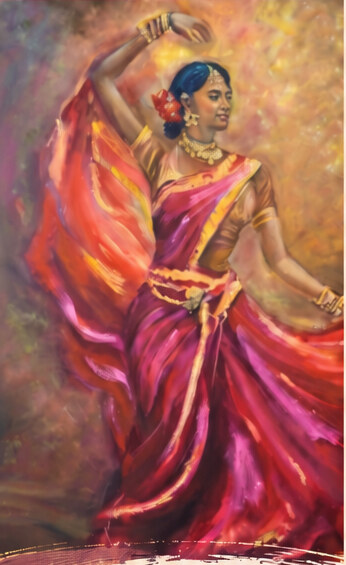
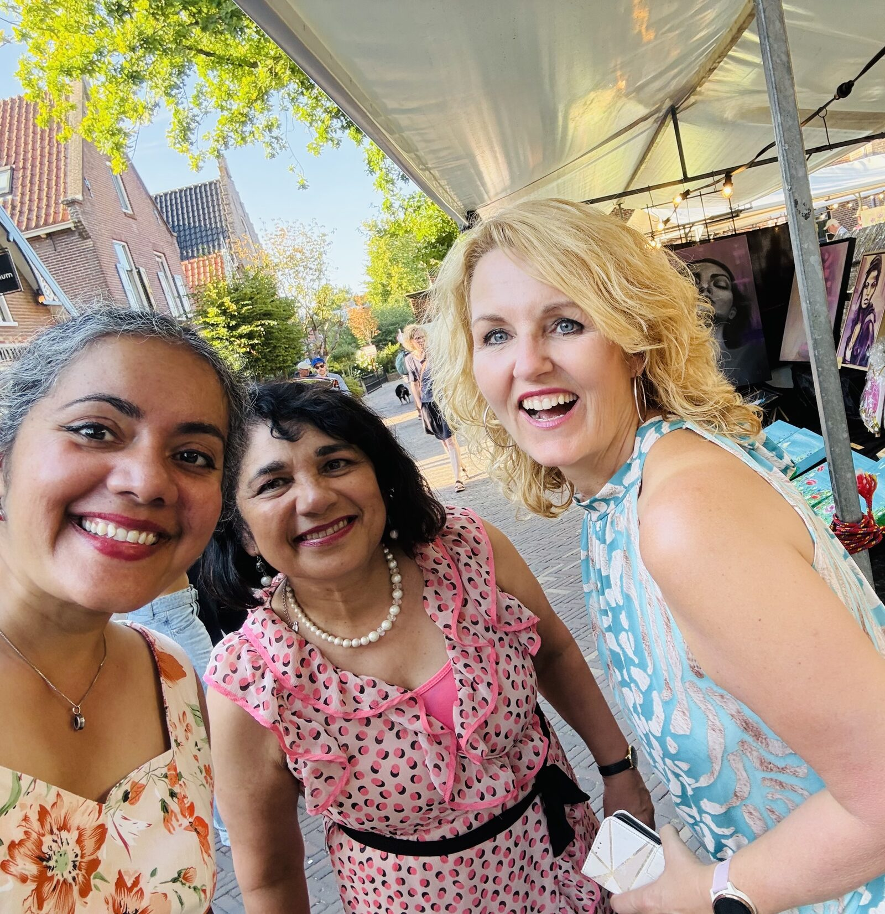
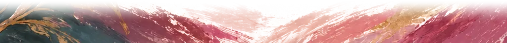

Lya
- Beweging
- Cultuur
- Vrouwelijke kracht
Drie kunstenaarsDrie perspectievenÉén verhaal
SchilderijenInspiratieOntmoeting

Expositie
17 oktober
t/m
1 december 2026
Feestelijke opening
Zaterdag
24 oktober
om 16:00 uur
De Speciaalzaak
Herenstraat 16, 2271 CG Voorburg